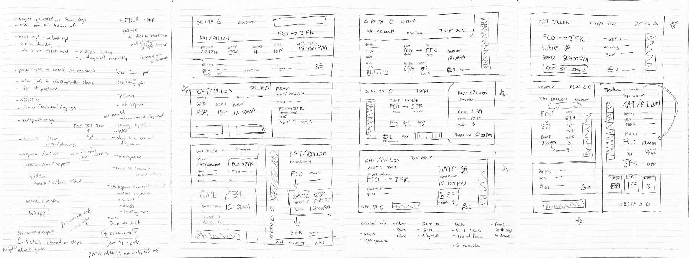
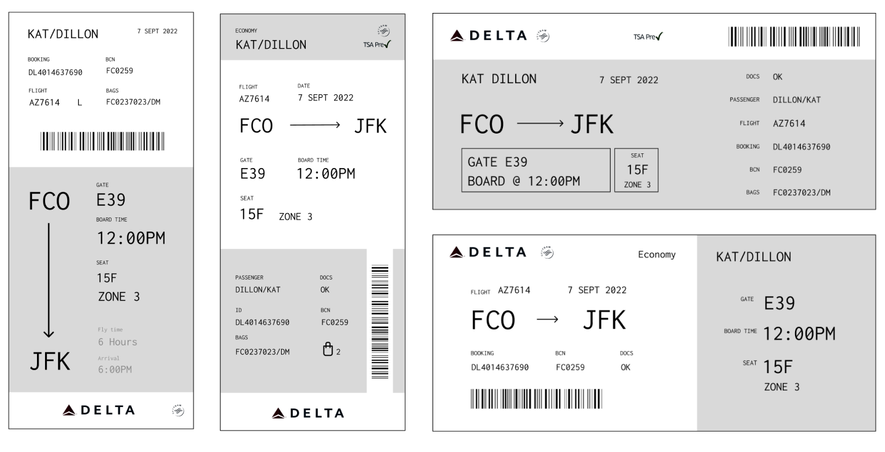

Context: For airline passengers, the boarding pass is an essential artifact that guides them through the process of going through an airport and making it on time for their flight. If the boarding pass is difficult to parse, it might add a host of frustrations for both the passengers and airline staff.
Key Question: How might we redesign this artifact for easy of use and efficiency for its users?
It was essential to establish the primary audiences of the ticket in order to design with the user in mind. Personas were created for the three main users: the passenger, desk / boarding attendants, and security staff.
Each data piece on the ticket was examined for its purpose and how they relate to each other.
A competitive analysis was conducted to review existing boarding tickets and their methods of organizing and presenting information.
Quick sketching of potential layouts allowed for experimenting different groupings and flow of information.
Digital drafts were created and printed in low- fidelity to further explore layout and flow of information.
Following the critiques and suggestions that came out of the first iteration, more drafts were created. In this round, the focus was on establish a clear hierarchy and improving readability.
The resulting tickets still lacked a sense of flow that guides the audience’s eyes.
In pursuing of the ideal information flow, it was helpful to go back to the research results on users and their journey of navigating the airport. Further refinements were made in adding color, deciding on whitespace and flow of the layout, and choosing appropriate font-weights and sizing for both hierarchy and aesthetic.